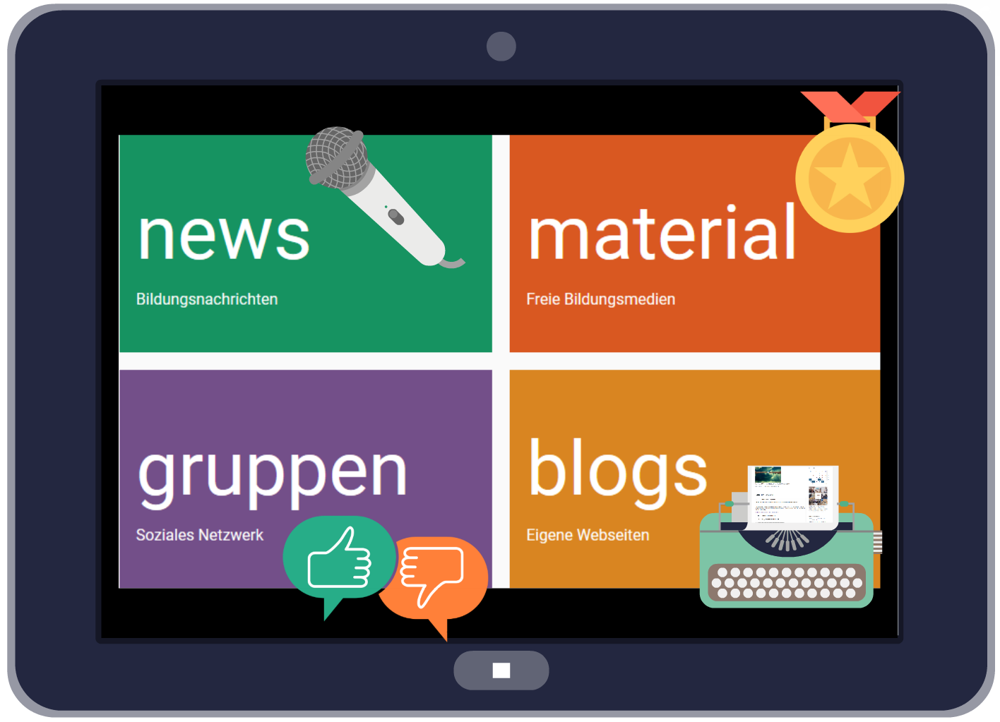

Ein Haus mit vielen Räumen
Persönliche Studierzimmer
Virtuelle Klassenzimmer
Kunstmuseum
Lernwerkstatt
Foyer - Zeitungsecke
Bibliothek (Materialpool)
Praxishilfen
AV-Medien
Zeitschriften
Linksammlungen
Digitale Imitation
der analogen Welt
- Lernen mit digitalen (neuen) Medien
- Computer Räume
- Digitalisierte Printmedien (E-Reader)
- Schulserver (Filter, selekt. Medien)
- E-Learning Kurse (digitales Fernstudium)
- Laptop Klassen
- Instruktion
Digitales Lernen ist
räumlich und zeitlich entschränkt
## Digitale Entgrenzung
## meiner (Lern)Welt
* mobile Learning (on Demand)
* Youtube Erklärvideos...
* Beteiligungskultur: open course, barcamps, open labs, open source
* Lernen in vernetzten Teams (WEQ statt IQ)
* BYOD (Nutzung von eigenen Enderäten)
---
**Exploration, informelles, non-formales Lernen**
Es gibt im Netz bereits
- zu fast jeder Frage Antworten
- zu jedem Unterrichtsthema
Informationen
Digitale Begleitung
Wir brauchen
- vertrauenswürdige Netzknoten
- Feedback von Mitlernenden
- Zugang zu Experten
- Hilfreiche Werkzeuge
## Aufgabe
* Informationen prüfen
* Ideen diskutieren
* Partner vermitteln
* Lernmedien entwickeln
* Neue Lerntechnicken erschließen
Materialpool
- Handverlesene Unterrichtsmateralien
- Empfehlungen auf Themenseiten
- Vorstellung von Autoren Und Einrichtungen
material.rpi-virtuell.de
News
- Bildungsnews für Religionspädagog*en
- Ideen für den Unterricht
- Aus den Instituten
- Digitale Medien
- Akteuere und ihre Projekte
- Schnittstelle zu sozialen Netzwerken
news.rpi-virtuell.de
Blogs
- Universal Publikationswerkzeug (Wordpress)
- Projekt- und Tagungsdokumentation
-
- Kursblogs
- Interaktive Lernangebote
- Persönliches Lerntagebuch
blogs.rpi-virtuell.de
Gruppen
- Diskussion, Dokumentation, Verabredungen
- Arbeiten an gemeinsamen Dokumenten
- Lernaktivitäten in- und außerhalb von rpi-virtuell
- Einbindung von gemeinsamen Webseiten
Modulares Angebot
- frei kombinierbar für eigene Bedarfe
- Impulse für die religionspädgogische Arbeit
- Geprüfte Materialien für Unterricht und Praxis
- Kommunikations- und Publikationswerkzeuge

... Dezentrale Netzwerke
blogs.rpi-virtuell.de (Homepagebaukasten)
cloud.rpi-virtuell.de
(sichere Alternative zu Dropbox und Google Docs)
matrix.rpi-virtuell.de (Dezentrales Chatsystem)
### rpi-virtuell
```
Gestern:
9.997 Besuche
139.978 Seitenansichten
140.794 Aktionen
```
Unsere digitalen Möglichkeiten
- unterstützen kirchliche Bildungsarbeit
- erweitern unsere Kommunikation
- helfen dabei, Mitstreiter*nnen zu finden
- vernetzen Einrichtungen und Kirchen
- achten das Recht auf Eigenständigleit